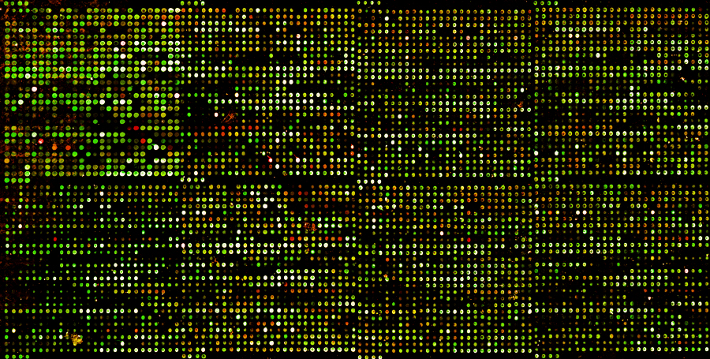

1 Principal Component Analysis
Principal Component Analysis (PCA) is one of the most popular techniques to perform “dimensionality reduction” of complex data sets. If we see the data with many variables as points in a high-dimensional space, we can compute new variables as linear combinations of the original ones and represent each data point as a set of coordinates in the new variables. In this way, we can project large-dimensional data sets onto low-dimensional spaces and lose the least information about the data.
1.1 Motivation: simplifying complex data
Suppose we have a data set with \(n\) variables and \(m\) observations of each (typically, with \(n \gg m\)), in which the \(m\) rows are observations and the \(n\) columns are the variables. Each row of this matrix defines a point in the Euclidean space \(\mathbb R^n\). Many biological data sets, e.g. gene expression {numref}fig-micro-array, RNAseq, medical imaging, can contain thousands or more variables, which poses major challenges both for visualization and computational tasks. PCA provides the best representation of such a data set in terms of a smaller set of variables, while capturing as much variance as possible.

The intuition behind finding these new collective variables rests on the fact that the original variables have relationships. This is typically measured using covariance, which quantified how much a pair variables tends to move in the same direction (positive covariance) or in opposite directions (negative covariance). If two variables are tighlty coupled, one can replace the two measurements with one, which will describe how much the two of them are deviating in some collective way.
It is helpful to think of this geometrically: if the variables are related, the scatterplot of observed data points will have a shape. The goal of PCA is to find directions in the \(n\)-dimensional space of observations that best match the shape of the data cloud. This requires tools from linear algebra, specifically the technique of change of basis.
1.2 Linearity and vector spaces
We have dealt with linear models in various guises, so now would be a good time to define properly what linearity means. The word comes from the shape of graphs of linear functions of one variable, e.g. \(f(x) = a x + b\), but the algebraic meaning rests on the following two general properties:
A linear transformation or linear operator is a mapping \(L\) between two sets of vectors with the following properties:
- (scalar multiplication) \(L(c \vec v) = c L(\vec v)\); where \(c\) is a scalar and \(\vec v\) is a vector;
- (additive) \(L(\vec v_1 + \vec v_2) = L(\vec v_1) + L(\vec v_2)\); where \(\vec v_1\) and \(\vec v_2\) are vectors.
Here we have two types of objects: vectors and transformations/operators that act on those vectors. The basic example of this are vectors and matrices, because a matrix multiplied by a vector (on the right) results another vector, provided the number of columns in the matrix is the same as the number of rows in the vector. This can be interpreted as the matrix transforming the vector \(\vec v\) into another one: $ A v = u$.
Example: Let us multiply the following matrix and vector (specially chosen to make a point):
Mat = np.array([[2, 1],[2, 3]])
vec1 = np.array([1, -1])
vec2 = Mat@vec1
print(vec1)[ 1 -1]print(vec2)[ 1 -1]We see that this particular vector \((1,-1)\) is unchanged when multiplied by this matrix, or we can say that the matrix multiplication is equivalent to multiplication by 1. Here is another such vector for the same matrix:
vec1 = np.array([1, 2])
vec2 = Mat@vec1
print(vec1)[1 2]print(vec2)[4 8]In this case, the vector is changed, but only by multiplication by a constant (4). Thus the geometric direction of the vector remained unchanged.
The notion of linearity leads to the important idea of combining different vectors:
A linear combination of \(n\) vectors \(\{ \vec v_i \}\) is a weighted sum of these vectors with any real numbers \(\{a_i\}\): \[ a_1 \vec v_1+ a_2 \vec v_2... + a_n \vec v_n\]
Linear combinations arise naturally from the notion of linearity, combining the additive property and the scalar multiplication property. Speaking intuitively, a linear combination of vectors produces a new vector that is related to the original set. Linear combinations give a simple way of generating new vectors, and thus invite the following definition for a collection of vectors closed under linear combinations:
A vector space is a collection of vectors such that a linear combination of any \(n\) vectors is contained in the vector space.
The most common examples are the spaces of all real-valued vectors of dimension \(n\), which are denoted by \(\mathbb{R}^n\). For instance, \(\mathbb{R}^2\) (pronounced “r two”) is the vector space of two dimensional real-valued vectors such as \((1,3)\) and \((\pi, -\sqrt{17})\); similarly, \(\mathbb{R}^3\) is the vector space consisting of three dimensional real-valued vectors such as \((0.1,0,-5.6)\). You can convince yourself, by taking linear combinations of vectors, that these vector spaces contain all the points in the usual Euclidean plane and three-dimensional space. The real number line can also be thought of as the vector space \(\mathbb{R}^1\).
1.2.1 Linear independence and basis vectors
How can we describe a vector space without trying to list all of its elements? We know that one can generate an element by taking linear combinations of vectors. It turns out that it is possible to generate (or “span”) a vector space by taking linear combinations of a subset of its vectors. The challenge is to find a minimal subset of subset that is not redundant. In order to do this, we first introduce a new concept:
A set of vectors \(\{ \vec v_i \}\) is called linearly independent if the only linear combination involving them that equals the zero vector is if all the coefficients are zero. ( \(a_1 \vec v_1 + a_2 \vec v_2 + ... + a_n \vec v_n = 0\) only if \(a_i = 0\) for all \(i\).)
In the familiar Euclidean spaces, e.g. \(\mathbb{R}^2\), linear independence has a geometric meaning: two vectors are linearly independent if the segments from the origin to the endpoint do not lie on the same line. But it can be shown that any set of three vectors in the plane is linearly dependent, because there are only two dimensions in the vector space. This brings us to the key definition of this section:
A basis of a vector space is a linearly independent set of vectors that generate (or span) the vector space. The number of vectors (cardinality) in such a set is called the dimension of the vector space.
A vector space generally has many possible bases, as illustrated in figure. In the case of \(\mathbb{R}^2\), the usual (canonical) basis set is \(\{(1,0); (0,1)\}\) which obviously generates any point on the plane and is linearly independent. But any two linearly independent vectors can generate any vector in the plane.
Example: The vector \(\vec r = (2,1)\) can be represented as a linear combination of the two canonical vectors: \(\vec r = 2\times (1,0)+1\times (0,1)\). Let us choose another basis set, say \(\{(1,1); (-1,1)\}\) (this is the canonical basis vectors rotated by \(\pi/2\).) The same vector can be represented by a linear combination of these two vectors, with coefficients \(1.5\) and \(-0.5\): \(\vec r = 1.5\times (1,1) - 0.5 \times (-1,1)\). If we call the first basis \(C\) for canonical and the second basis \(D\) for different, we can write the same vector using different sets of coordinates for each basis:
\[ \vec r_{C} = (2,1); \; \vec r_D = (1.5, -0.5) \]
1.2.2 Projections and changes of basis
The representation of an arbitrary vector (point) in a vector space as a linear combination of a given basis set is called the decomposition of the point in terms of the basis, which gives the coordinates for the vector in terms of each basis vector. The decomposition of a point in terms of a particular basis is very useful in high-dimensional spaces, where a clever choice of a basis can allow a description of a set of points (such as a data set) in terms of contributions of only a few basis vectors, if the data set primarily extends only in a few dimensions.
To obtain the coefficients of the basis vectors in a decomposition of a vector \(\vec r\), we need to perform what is termed a projection of the vector onto the basis vectors. Think of shining a light perpendicular to the basis vector, and measuring the length of the shadow cast by the vector \(\vec r\) onto \(\vec v_i\). If the vectors are parallel, the shadow is equal to the length of \(\vec r\); if they are orthogonal, the shadow is nonexistent. To find the length of the shadow, use the inner product of \(\vec r\) and \(\vec v\), which as you recall corresponds to the cosine of the angle between the two vectors multiplied by their norms: $r, v=rv() $. We do not care about the length of the vector \(\vec v\) we are projecting onto, thus we divide the inner product by the square norm of \(\vec v\), and then multiply the vector \(\vec v\) by this projection coefficient:
\[ Proj(\vec r ; \vec v) = \frac{ \langle \vec r , \vec v \rangle } {\langle \vec v , \vec v \rangle } \vec v = \frac{ \langle \vec r , \vec v \rangle } {\vert \vec v \vert^2} \vec v= \frac{ \vert\vec r\vert \cos(\theta) } {\vert \vec v \vert}\vec v \]
This formula gives the projection of the vector \(\vec r\) onto \(\vec v\), the result is a new vector in the direction of \(\vec v\), with the scalar coefficient \(a = \ \langle \vec r , \vec v \rangle /\vert \vec v \vert^2\).
Example: Here is how one might calculate the projection of the point \((2,1)\) onto the basis set \(\{(1,1); (-1,1)\}\):
v1 <- c(1, 1)
v2 <- c(-1, 1)
u <- c(2, 1)
ProjMat <- matrix(cbind(v1, v2),
byrow = T, nrow = 2)
print(ProjMat) [,1] [,2]
[1,] 1 1
[2,] -1 1ProjMat %*% u [,1]
[1,] 3
[2,] -1This is not quite right: the projection coefficients are off by a factor of two compared to the correct values in the example above. This is because we have neglected to normalize the basis vectors, so we should modify the script as follows:
v1 <- c(1, 1)
v1 <- v1 / (sum(v1^2))
v2 <- c(-1, 1)
v2 <- v2 / (sum(v2^2))
u <- c(2, 1)
ProjMat <- matrix(cbind(v1, v2),
byrow = T, nrow = 2)
print(ProjMat) [,1] [,2]
[1,] 0.5 0.5
[2,] -0.5 0.5print(ProjMat %*% u) [,1]
[1,] 1.5
[2,] -0.5This is an example of how to convert a vector/point from representation in one basis set to another. The new basis vectors, expressed in the original basis set, are arranged in a matrix by row, scaled by their norm squared, and multiplied by the vector that one wants to express in the new basis. The resulting vector contains the coordinates in the new basis.
1.3 PCA algorithm
We start with a data set \(X\) in the form of a \(m\) by \(n\) matrix. The first step is to decide which are the variables and which are the observations. For example, in the case of the microarray experiment, it usually makes sense to consider different genes the variables, and to use principal components to see which genes tend to be expressed together with others.
The second step is to compute the variance-covariance matrix of the \(N\) variables.
The variance-covariance matrix \(C\) of a data set \(X\) with \(n\) variables \(x_i\) and \(m\) observations is an \(n\) by \(n\) matrix that contains pairwise variances between all \(n\) variables, so that its \(i\), \(j\) element is:
\[C_{i,j} = Cov(X_i,X_j)\]
The third step is to diagonalize (find the eigenvalues and eigenvectors) of the covariance matrix \(C\). The eigenvectors are the principal components of the \(n\) variables in the data set, representing linear combinations of the variables that best fit the data. Diagonalizing an \(n\) by \(n\) matrix results in \(n\) eigenvectors, so in order to simplify the description one needs to choose the most significant ones. This is accomplished by choosing a subset of \(k\) principal components with the largest eigenvalues. Here are the steps of principal component analysis (PCA):
- Obtain a dataset as a \(m\) by \(n\) matrix, with \(n\) variables and \(m\) observations
- Compute covariances for variable i and variable j, put them in the covariance matrix \(C\)
- Compute the eigenvalues and eigenvectors (principal components) of the matrix \(C\)
- Order the principal component by size of eigenvalues from largest to smallest and select a few as the new coordinates
1.4 Optimization by explained variance
The reason that we order the PCs by their eigenvalues is that they measure the amount of variance captured by each principal component. In that, they are equivalent to the coefficient of determination \(r^2\) in linear regression. The sum of all the eigenvalues is equal to the total variance of all the variables:
\[ \sum_i \lambda_i = \sum Var(X_i)\]
and the fraction of variance captured by the a principal component is:
\[ Var(PC_i) = \frac{\lambda_i}{\sum_i \lambda_i}\]
The theory behind this rests on some relatively sophisticated linear algebra, in particular what is called the singular value decomposition (SVD) and the Eckart-Young Mirsky theorem. Here is a nice video by Gilbert Strang that explains this:Strang lecture
1.5 Dimensionality reduction
After sorting the principal components and selecting \(k\) largest eigenvalues, we are ready to simplify the data. This means that we can express a data set of \(n\) variables in terms of the coordinate set of \(k\) principal components. In order to express the data set in this new system of coordinates, we compute the projection coefficients for each measurement onto a give principal component. Suppose that \(Y\) is a set of measurements of \(N\) variables (e.g. genes) and \(P_i\) is the \(i\)-the principal component. Then the projection coefficient of \(Y\) onto \(P_i\) is the dot product of the two vectors (both of length \(N\)) divided by the squared norm (length) of the PC:
\[ c_i = \frac{\langle Y, P_i\rangle}{|| P_i ||^2} \]
If the eigenvectors are normalized prior to the computation (as they are by most computational packages), then the projection coefficient is just the dot product. Then the coefficients can be obtained for all of the measurements in the data set \(X\) (\(m\) by \(n\)) by multiplying it by the matrix \(P\) containing the first \(k\) eigenvectors (principal components), which has \(n\) rows and \(k\) columns. The result is an \(m\) by \(k\) matrix \(C\) containing \(k\) coefficients for each of the \(m\) measurements:
\[ C = D \times P \]
Here is the outline for the transformation:
- Subtract the mean of each observation from the data matrix (if it has \(M\) observations in rows and \(N\) variables as columns, subtract the mean of each row from it)
- Compute the projection coefficients \(C = D \times P\) for each measurement and each of the \(k\) principal components
- Plot or otherwise display these coefficients as coordinates in the new vector system of the \(k\) PCs. This can be used to cluster or otherwise find patterns in the observations.
The entire data set can be expressed in a low-dimensional setting, for instance plotted in the plane of two principal components with coordinates \((c_{i,1}, c_{i,2})\) for each data measurement \(i\). This is often useful for clustering, or grouping experimental conditions based on the similarity of their principal component representations. Biologists frequently do this with complex data sets, for example grouping different cell lines together by their gene expression profiles.